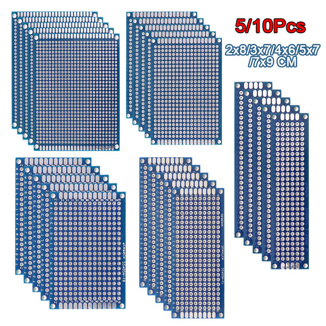
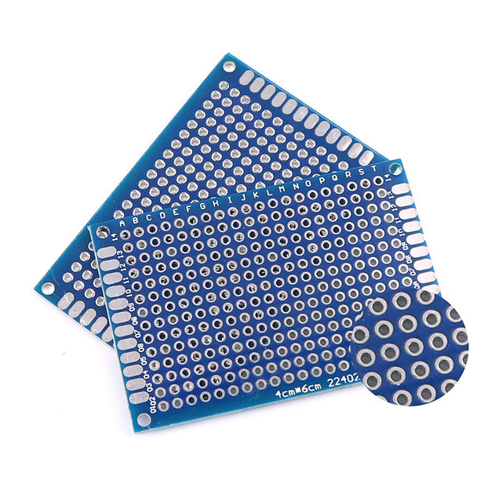
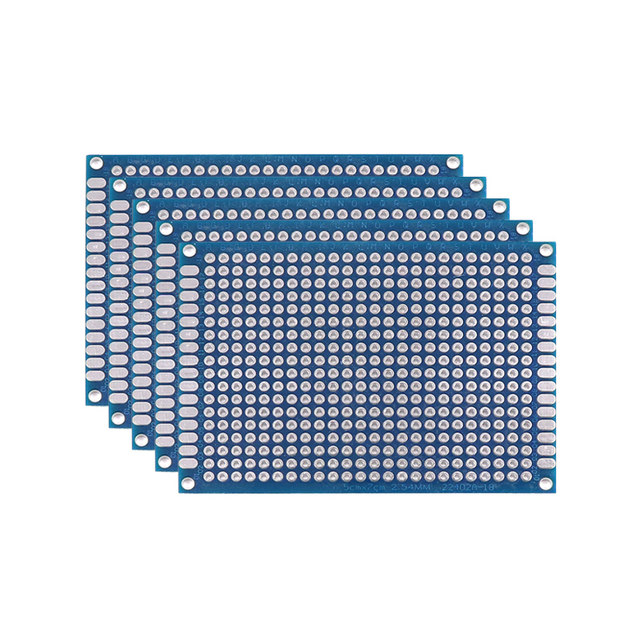
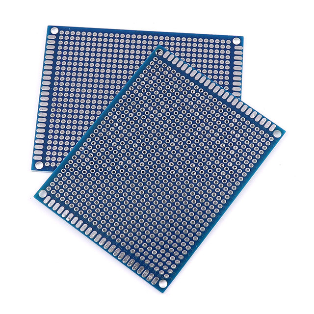
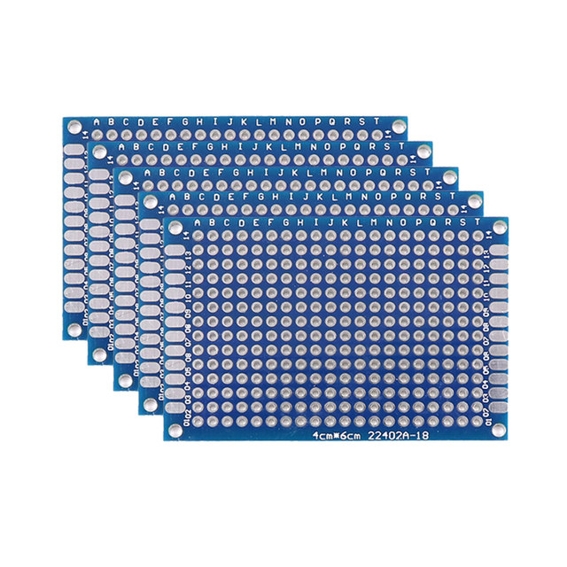

• High-Quality PCB Boards :These PCB boards are of high quality, ensuring durability and longevity. They are perfect for DIY soldering projects and circuit board prototyping.
• Multiple Sizes Available :Available in various sizes (2x8/3x7/4x6/5x7/7x9cm), these PCB boards cater to a wide range of needs, making them versatile for different projects.
• Double-Sided Circuit Boards :These double-sided circuit boards allow for more complex circuit designs and connections, enhancing the functionality and complexity of your DIY projects.
• Origin : Mainland China
• Ideal for DIY Projects :Perfect for DIY enthusiasts, these PCB boards are ideal for personalizing and creating unique circuits, fostering creativity and learning.
• Blue PCB Boards :The blue PCB boards not only add a aesthetic appeal to your projects but also provide a contrasting color that stands out, enhancing the overall visual appeal.
5/10PCS PCB Board Prototype Board Blue 2x8/3x7/4x6/5x7/7x9cm Double Sided Circuit Boards For DIY Soldering Project




